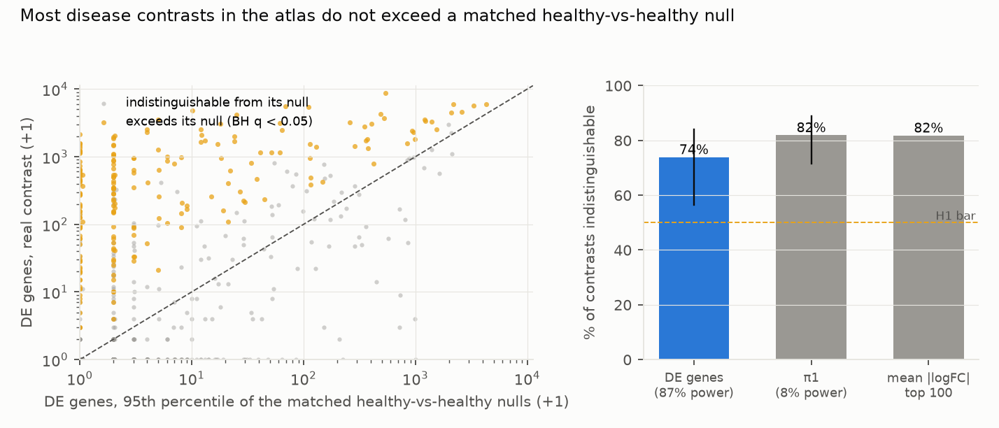
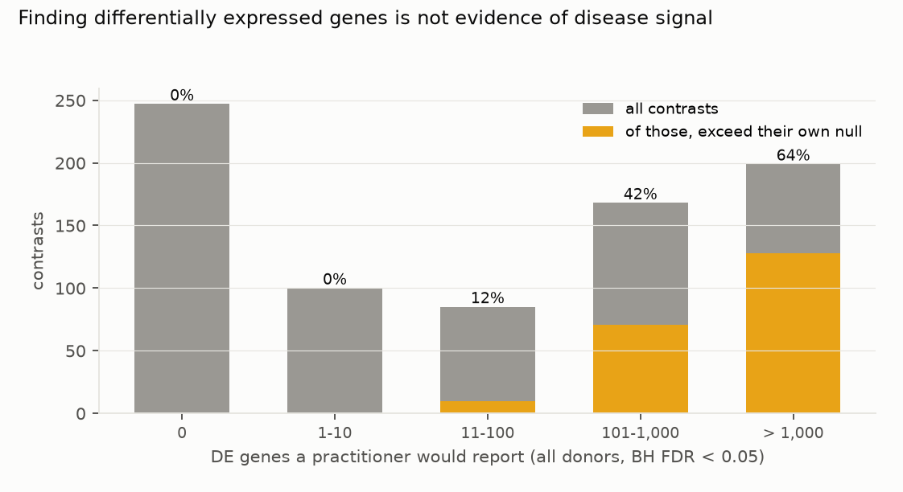
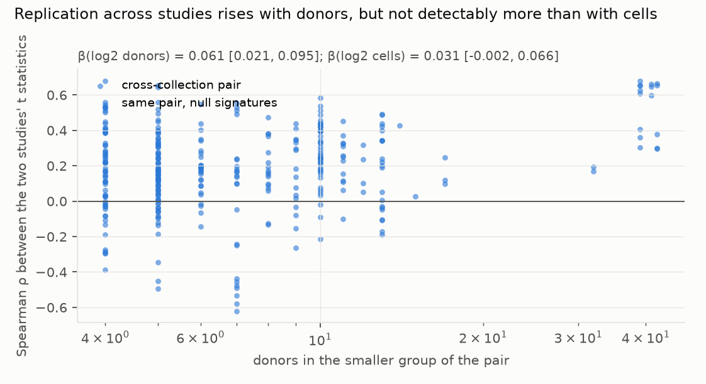

Verdict: H1 Supported; H2 Inconclusive.
- H1 (more than half of contrasts are indistinguishable from their matched healthy-vs-healthy null): Supported.
- On the number of differentially expressed genes, the statistic the power check selects (below), 74% of the 799 contrasts do not exceed their own null at BH q < 0.05 (95% CI 57–84%, cluster bootstrap over the 25 datasets). Real and null are compared at the same group sizes, a median of 13 donors against 13.
- On π1, the preregistered primary statistic, 82% (71–89%). But π1 detects a real twofold change in 5% of genes
only 8% of the time, so that figure is nearly uninformative; the DE-gene count detects it 87% of the time
(D2,
results/tables/power_check.json). - Weighting every disease equally gives the same answer: 74%.
- Most of the 74% is nothing against nothing (post hoc, prompted by the review).
- At the matched size, 424 of 799 contrasts (53%) find no DE genes at all in the real comparison, and the null's median is also zero in 96.5% of contrasts. Those 424 make up 72% of the indistinguishable group.
- Of the 375 contrasts that find at least one DE gene, 166 (44%) still do not exceed their null.
- The headline therefore mainly reflects power at about 13 donors a side. It does not show that disease signatures look like donor noise.
- The test is conservative in H1's direction. With 500 null draws the smallest attainable p is 1/501. Under BH a contrast can be called distinguishable only if at least 32 contrasts are called distinguishable (129 sit at the minimum here), so the constraint does not bind. But the design could never report a small number of distinguishable contrasts.
- The DE-gene count a practitioner reports barely predicts whether the contrast beats its null.
- At full size, using every donor (median 100 per contrast), a practitioner would report at least one DE gene in 69% of these contrasts, with a median of 52.
- Among contrasts reporting 11–100 DE genes, only 12% exceed their own matched null. Among those reporting 101–1,000, only 42%; above 1,000, 64%.
- The two are not the same comparison. The null test is run at matched group sizes, a median of 13 donors against 13, because a null needs two disjoint healthy groups and no dataset has enough healthy donors to mirror a full-size comparison. So part of this gap is donor count, not signal.
- Comparing healthy donors with healthy donors is not quiet: in 8.9% of contrasts the null's 95th percentile is above 100 DE genes.
- A positive control confirms the power problem on real data. Comparing male with female healthy donors in the largest dataset (115 per group, brain oligodendrocytes) gives 219 DE genes and is detected against permuted nulls at p = 0.005. π1 misses it (p = 0.25).
- It varies by disease. Of the eight most common diseases, 0% of schizophrenia (37 contrasts) and 0% of tauopathy (35) contrasts exceed their null, against 62% of interstitial lung disease (32) and 63% of pulmonary fibrosis (27). COVID-19 (86) is 45%.
- Disease-gene enrichment is weak. Comparing the Open Targets scores of each contrast's 100 strongest genes with the same statistic on its nulls, 9.9% of 575 contrasts beat their null at raw p < 0.05, against 5% expected by chance. None survives BH correction.
- H2 (cross-study replication follows donor count rather than cell count): Inconclusive.
- Across 335 cross-collection pairs (94 disease × tissue × cell-type groups, 9 diseases), the median Spearman correlation between two studies' t statistics is 0.19.
- More donors does predict better replication: β = 0.061 per doubling (95% CI 0.021–0.095).
- But it is not detectably better than cell count: the paired difference is 0.030 (−0.032 to 0.084), so the hypothesis as preregistered is Inconclusive.
- Those pairs span only 9 diseases. Bootstrapping over diseases instead widens every interval to include zero.
- The nulls share the real contrasts' confounding. Where both sides of a pair have null draws, the null signatures correlate across studies at 0.03 against 0.30 for the real ones, so the matched null is not simply reproducing a batch effect common to all data.
In plain terms
Single-cell studies compare sick and healthy people one cell type at a time, and report the genes that differ. The trouble is that people differ from each other anyway. With a dozen donors per group, some genes will always look different.
We took a large public atlas of such data and, for each disease comparison, built 500 fake comparisons from healthy donors only: same study, same tissue, same cell type, same numbers, matched for sex and age. Then we ran the identical analysis on all of them and asked whether the real comparison stood out from its own fakes.
Three quarters did not, but mostly because, at a dozen donors a side, neither the disease comparison nor the typical healthy fake found any differences at all: half of all the disease comparisons found no genes. Of the comparisons that did find something, a little over half stood out from their fakes.
A caveat we cannot remove: the fake comparisons can only be as large as the healthy donors allow, so the test runs at about a dozen donors a side, while a researcher using every donor in the study has about a hundred. Part of what we call "indistinguishable" is therefore the smaller comparison, not only the weaker signal.
That is not a claim that the diseases have no effect on these cells. It means these particular datasets, at this size, cannot show it. Lung fibrosis comparisons mostly do stand out; schizophrenia and tauopathy comparisons, in these data, never did.
What was asked
The lead asked how much reported single-cell disease signal survives explicit, matched negative controls at atlas scale.
Prior work: - Squair et al. (2021) showed that treating cells as replicates inflates false discoveries and that donor pseudobulk controls them. This study uses pseudobulk throughout, so it asks a different question: whether a correct pipeline still reports signatures a matched null would also produce. - Nakatsuka et al. (2025) found that disease DE genes from single neurodegeneration and COVID-19 datasets replicate poorly across datasets, and improved matters with a rank-based meta-analysis. They measure cross-study replication; they do not build within-study negative controls. - Dann et al. (2023) showed matched controls reduce false discoveries when identifying disease cell states.
No study was found that builds matched healthy-vs-healthy nulls across an atlas and reports how many published-style contrasts exceed them.
How it was done
- Data. CZ CELLxGENE Census LTS 2025-11-08, human, primary cells only, raw counts summed per (dataset, tissue, cell type, donor) with at least 10 cells. Donors carrying more than one disease label in a dataset were excluded.
- Contrasts. 799 primary contrasts: within one dataset, a disease group of at least 8 donors against at least 16 normal donors of the same tissue and cell type. Median 13 donors per group after matching, median 106 cells per donor.
- The null. For each contrast, 500 draws of two disjoint healthy-donor groups from the same dataset, tissue and
cell type, reproducing the real draw's counts by sex and age bin.
- Where a stratum was short, the draw fell back to the nearest age bin, then to any donor of the same sex, then to any donor. These fallbacks cover 11.8% of null donor slots, and 5.5% did not match sex.
- The pipeline, identical for real, null and full-size runs:
filterByExpr, TMM, voom, lmFit, eBayes, with sex as a covariate where it varies. edgeR 4.8.2 and limma 3.66.0 in Docker, without network access. - Exceedance. An empirical p from 500 null draws, then BH across contrasts; a contrast is indistinguishable at q ≥ 0.05.
- Positive control (G3). Male against female normal donors in the same framework, 25 real draws against 200
label-permuted nulls (
results/plausibility.md). - Coverage (G2).
results/tables/coverage.json: 43 of 43 datasets pseudobulked with integer counts and no cell shortfall against the Census metadata; contrast donors kept and dropped with reasons; fits failed.
Results
Exceedance (results/figures/F1_exceedance.png)


What a practitioner would report (results/figures/F2_practitioner.png)


Replication across studies (results/figures/F3_replication.png)


What predicts exceeding the null (exploratory)
Regressing each contrast's standardised excess over its null on standardised predictors (cluster bootstrap over datasets): sex imbalance between the disease and normal groups has the clearest association (β = 0.75, 95% CI 0.26–1.96), and nucleus-based assays exceed less often (β = −0.97, −1.87 to −0.06). Donor count (β = 0.16, −0.28 to 1.18) and cells per donor (β = 0.13, −0.22 to 0.41) do not separate from zero. The sex-imbalance association suggests part of the exceedance that does occur is residual donor confounding rather than disease biology.
Sex imbalance by quartile (post hoc, prompted by the review; results/tables/posthoc_review.json):
| quartile of sex imbalance | median imbalance | share exceeding the null | median null 95th percentile (DE genes) |
|---|---|---|---|
| lowest | 0.03 | 12% | 1.0 |
| second | 0.10 | 25% | 1.0 |
| third | 0.18 | 21% | 1.0 |
| highest | 0.36 | 47% | 1.05 |
- The association is between datasets. Within datasets the correlation is −0.01, against 0.29 overall. It is consistent with cohort-level confounding, but it cannot separate that from differences in signal or power between datasets and diseases. The first review's inference that the true share of signal is below 26% is withdrawn.
- The null's tail rises with imbalance. The median of the null's 95th percentile is flat across quartiles, but the share of contrasts whose null 95th percentile exceeds 10 DE genes rises from 9.5% to 25%.
What this does and does not show
- A matched null is a low bar that most atlas contrasts do not clear, mostly because at about 13 donors a side they find nothing at all. This is a statement about these datasets at these donor counts, not about the diseases.
- Power is the main alternative explanation. The power check's injection, a twofold change in 5% of genes, is large; power against a disease effect of a few tens of percent in a handful of genes is lower and was not estimated.
- The usual evidence does not separate them. A DE-gene count in the dozens, which is what most of these contrasts produce, is almost never distinguishable from healthy-donor variation in the same data.
- Exceeding the null is necessary, not sufficient. A disease cohort processed in its own batch would exceed a null drawn from that dataset's healthy donors. The exploratory sex-imbalance association is consistent with some of the exceedance being confounding.
- Not shown:
- That these diseases have no cell-type-specific effects. Low power is the more likely explanation for most contrasts, and the study does not estimate per-contrast power against a biological effect size.
- That a full-size analysis would also fail. The matched null is bounded by the healthy donors available, so it tests a smaller comparison than a practitioner runs. The exceedance result is a statement at matched sizes.
- Matching beyond sex and age bin. Ancestry, BMI, post-mortem interval and sampling site are not matched, and 11.8% of null donor slots used a fallback.
- Cell-type label quality. Census annotations are used as given, at mixed granularity.
- H2 beyond 9 diseases. The replication analysis is observational and thin.
Process and deviations
- Preregistration:
plan.md, committed before any expression value was read. - Deviations (
deviations.md):- D1 (before any expression value): contrast counts under the plan's own donor rule (799, not 869); the H5AD data route; the DE image.
- D2 (before any H1 result): the preregistered primary statistic π1 has 8% power against a synthetic twofold change in 5% of genes, against 87% for the preregistered secondary DE-gene count. Both are reported; the interpretation leads with the DE-gene count. The choice used only null draws and synthetic injections.
- D3 (after review): the zero-DE share, the sex-imbalance quartiles, the p-value floor and the power caveat (post hoc); title and plain terms reframed.
- D4 (after the confirmation pass): the sex-imbalance inference withdrawn (within-dataset r −0.01), null-tail and wording corrections.
- Gates: G1 (plan §6), G2 (
coverage.json), G3 (results/plausibility.md, including the power check), G4 (results/tables/age_map.csv), G5 and G6 at write-up. G7 does not apply. - Independent review: publish with edits (four findings plus checks), edits in D3; confirmation pass: publish with edits, made in D4.
Reproducing it
code/meta.py, thencode/stream.py list.code/fetch_h5ad.pyandcode/pb_h5ad.py watch(they run together).code/draws.py agemap,build,control;code/power_check.py build.code/draws.py run 22andcode/power_check.py run 10(limma-voom in Docker).code/fetch_ot.py, thencode/analyse.pyandcode/figures.py.